云月一型胜法
#1 云月一型胜法 作者：有志青年 发表时间：2008-3-31 17:04:48
前些天偶然在贴吧看到一盘对局谱，云月一打变化至图一的7后有棋友认为无胜。我以前的研究结论认为黑还是能胜的。
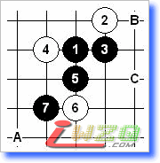
图一：本型也与银月互通。黑7-C是大家熟知的基础黑胜定式。本图的黑7活三后，白棋的A、B两点中B点最强。
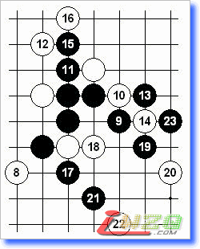
图二：白8弱防，黑9后简明易胜的局面。
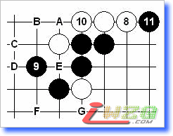
图三：黑9显而易见的要点。白10强防，11只能如此。白12大致有A~G的防点。
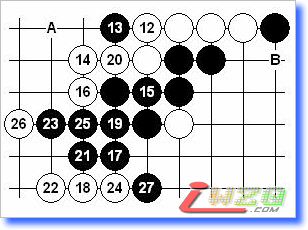
图四 12-A：如14-17，15-14，16-A，17-B！
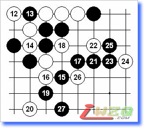
图五 12-B：12弱防，27后白难兼顾。
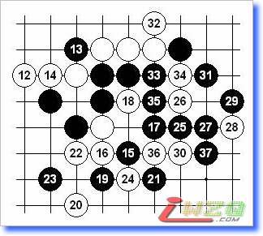
图六 12-C：13要点，14最强防。15后黑棋下方优势明显，白棋难以防守。21是局部常用手筋。
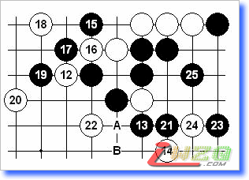
图七 12-D：有趣的防守，如对基本棋形熟悉的话，能很轻松找到胜法。如：22-A，23-B。如：14-17，15-25。
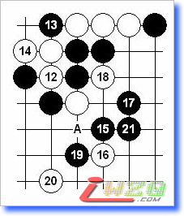
图八 12-E：14最强防，21后黑简单胜。如16-A，黑棋胜法参考图六。
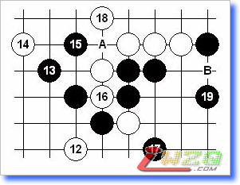
图九 12-F：17后由于黑左边有简单追胜，白18只能先防。但右边黑19后也是简明易胜的局面。如：14-A，16-14，17-B！
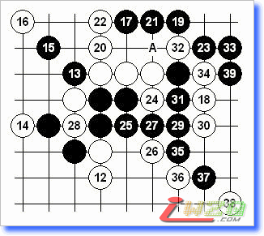
图十 12-G：本图12、14强防，17呼应全局的要点。如：18-A，19-31！
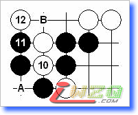
图十一 白10变化二：本图的白10也算强防，其他的白10黑容易胜。12如A，13-B是基本胜形。本图12最强防，13-B显而易见的要点黑能胜否？另外，黑13有更直接的胜法，有兴趣的可以试试看。